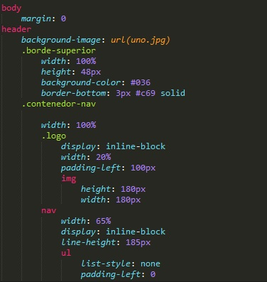
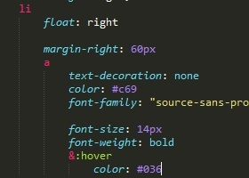

Crear archivo sass y que cree un css, o que vuelva a escuchar
A- vamos a la consola de ruby, busco el directorio donde voy a trabajar los archivos, con cd nombre de directorios como con git hasta llegar a la carpeta.
b- Voy a mano a la carpeta donde trabajaremos y en este lugar creo un archivo .sass o .scss depende la sintaxis que queramos trabajar
C- vollvemos a la consola de ruby y escribimos sass --watch estilos.sass:estilos.css
Este comando ultimo del paso c, lo hacemos tanto para crear el primer archivo estilos css, como para hacer que vuelva a escuchar sass cada dia que lo volvemos a usar a los archivos.
Que sublime reconosca sass
para que sublime text reconosca el codigo hay que añadirle una extension, para eso vamos a control + shift + p y abre el pakage y ahi, luego escribimos install pakage y se nos abre un instalador, ahi ponemos sass y buiscamso activar los que dicen set syntaix sass y syntax Highlighting for sass
Sintaxis de sass, ejemp
Los elementos hijos van a la misma altura que las propiedades del padre. No se usan comas y llaves.
Se anida selector agregando una tabulacion o identacion por selector. es importante colocar un espacion entre los dos puntos y el alor que tendra la propiedad brackground: #333 .
Los archivos con esta sintaxis son .sass .
hover y pesudoclases
En ocasiones es necesario modificar el comportamiento por defecto de los selectores anidados. Imagina que quieres aplicar estilos especiales en el estado hover del selector En estos casos, puedes utilizar el carácter & para hacer referencia al selector padre dentro del cual se encuentra la regla anidada. Ejemplo:
Comentarios en sass
Primero se pueden hacer los mismos comentarios que en css /**/
Despues se pueden hacer los mismos comentarios especificos asi // estos son para una sola, linea
Variables
$colo: #ccc
Las variables se crean con el signopesos,luego nombre de la variable, luego dos puntos , luego espacio en blanco luego el valor de la variable.